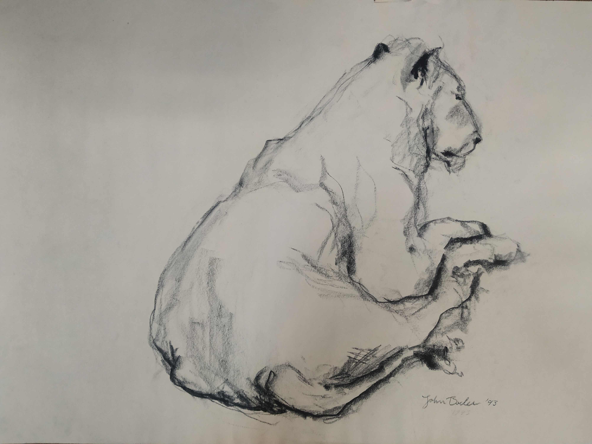

I am interested in the moment when certainty begins to shift.
My paintings bring together fragments, memories, observations and associations that do not always fit neatly together. Within the work, contradictions are not obstacles to overcome but conditions to explore.
Through both structure and spontaneity, I seek to create images that remain open, inviting reflection rather than conclusion.

Lion Watching Back 1993
Contemporary Art Practice
Based in The Netherlands